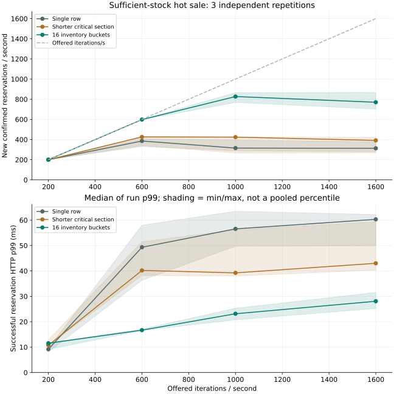
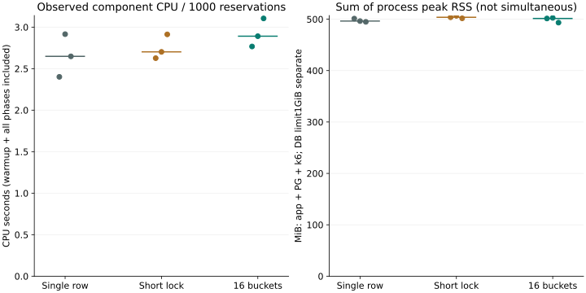

04 / INVENTORY CAPACITY
단일 재고 행의 잠금 경합과 16개 버킷 분할
모구시장의 인기 판매 회차에서는 남은 재고보다 한 행에 집중된 잠금이 신규 예약 처리량을 제한했다. 충분한 재고와 서로 다른 사용자를 둬도 성공 건수가 더 늘지 않았으며, 같은 MySQL 안에서 재고를 여러 행으로 나누자 이 경합을 분산할 수 있었다. 비교한 다른 대안은 잠금 보유 시간 단축으로, 두 방식의 처리량·지연·CPU를 함께 평가했다. 분할은 추가 SQL과 잔여 재고 탐색을 요구하고 사용자 편향에도 영향을 받으므로, 행을 늘린 것만으로 모든 입력에서 이득을 얻는 구조는 아니다.
판매 회차·사용자 제약·내구성·결제 복구를 동일하게 두고 세 구현을 k6로 비교했으며, 표에는 독립 3회 실행의 중앙값과 최소–최대를 표시했다. 이때 p99도 실행별 통계이므로 전체 원본을 합친 모집단 p99와는 구분해야 한다. 이 글의 성공 건수는 신규 예약이고 구매 확정은 별도 측정했다.
재고 배정과 사용자 중복 제약
모구시장은 수량이 한정된 상품의 공동구매 서비스로, 이번 구현에서는 판매 회차를 단위로 삼아 한 사용자가 같은 회차에 활성 예약 하나 또는 구매 하나만 가질 수 있도록 했다. 새 멱등키·다른 앱·다른 재고 버킷을 선택해도 이 제한은 유지된다. 예약의 201은 DB 커밋이 끝났다는 뜻이며, 결제 202는 구매 완료가 아니다.
재고 상태는 MySQL을 기준으로, 승인·취소 사실은 PG 응답을 검증해 판단한다. PAYMENT_PENDING과 결과 불명의 REVIEW 거래는 예약 TTL이 지나도 재고를 유지한다. 세 구현은 PG HTTP 승인·조회·취소, 웹훅 수신함과 복구 규칙을 공유하지만, 여기서는 재고 배정 비용을 분리하기 위해 결제를 시작하지 않는 예약 부하를 사용했다.
처음에는 초당 150건을 12초 보내는 시험과 재고 100개를 두고 초당 1,000건을 보내는 시험을 수행했다. 후자는 재고 소진 후 대부분 409·429로 끝나 지속적인 신규 예약 쓰기 한계를 알기 어려웠으므로, 본 비교에는 충분한 재고와 고유 사용자를 사용하고 초기 결과는 예비 시험으로 보존했다.
SQL 실행 계획과 실제 재고 행 잠금 대기
단일 재고 행 구현은 명령 결과의 멱등 행, 사용자 중복을 제한하는 guard, sales의 PK 한 행 순으로 잠근다. DB 시각으로 판매 기간을 확인한 뒤 재고를 차감하고 예약·guard·최초 응답을 커밋한다. 외부 네트워크 호출은 없다. 이 구조에서는 같은 회차의 모든 신규 예약이 동일한 재고 잠금을 획득해야 한다.
-- 기준의 lock 순서 (신규 ID는 아직 다른 worker에게 보이지 않는다)
request_results → user_guard → sales PK → 새 reservation
재고 감소 → guard 연결 → 결과 기록 → COMMIT
SELECT id FROM sales WHERE id=? FOR UPDATE;
-- 기다린 뒤 새 statement에서 시각을 읽는다.
SELECT *, opens_at <= UTC_TIMESTAMP(6)
AND closes_at > UTC_TIMESTAMP(6) AS is_open
FROM sales WHERE id=?;마감 검사를 잠금 전에 한 번만 하면 기다리는 동안 마감된 요청을 받아들일 수 있으며, 조건부 UPDATE에 쓴 시각 함수 역시 그 statement의 시작 시각에 묶인다. 따라서 실제 잠금을 얻은 뒤 다시 검사하는 경계를 유지했다. 별도 회귀는 잠금 대기 중 마감시키고 해제 후 SALE_CLOSED를 확인한다.
요청이 같은 재고 행에 몰리는 조건을 바꾸자 대기가 크게 줄어, 재고 행 경합을 개선 대상으로 좁힐 수 있었다. 총 입력량을 유지하고 saleId만 분산한 예비 실행에서, 단일 회차의 재고 잠금 SELECT 누적 시간은 약 600초, InnoDB 행 잠금 대기는 약 599초였지만 16개 회차에서는 같은 SELECT 시간이 약 4초로 줄었다. 초당 1,000건 구간의 신규 성공도 약 983건/초까지 증가했다. 두 예비 실행은 데이터와 캐시를 완전히 초기화해 맞춘 조건이 아니므로 개선 배율 산정에는 쓰지 않았다. 아래 본 비교는 매회 초기화했다. 단일 회차 pilot 원본 · 16회차 pilot 원본
본 시험에서도 풀 획득과 GC보다 재고 잠금에 더 많은 시간이 들었다. SQL digest의 SUM_TIMER_WAIT, InnoDB row-lock 누적 시간, data_lock_waits의 대기 테이블·인덱스를 함께 확인했다. PK로 한 행을 찾는 실행 계획이더라도 다른 트랜잭션이 보유한 그 행의 잠금을 기다릴 수 있다.
예약 시계열은 요청 시작 시각의 5초 cohort에서 성공한 고유 응답 수를 세므로, DB 커밋 순간의 완료율과는 다르다. 단계별 처리량은 해당 입력 cohort의 성공 수/단계 기간이며 graceful stop 중 완료도 포함한다.

재고 잠금 구간 단축과 재고 행 분할
예약 생성과 사용자 점유 정보 갱신을 재고 잠금 이전으로 이동
단일 재고 행을 유지하면서 줄일 수 있는 것은 잠금 획득 뒤의 DB 작업이었다. 새 예약 INSERT와 guard 연결을 먼저 준비하고 마지막에 재고를 잠그면, 예약 생성에 필요한 왕복을 공통 재고 잠금 밖으로 옮길 수 있다. 준비한 예약은 아직 커밋되지 않아 다른 워커에게 보이지 않으며, 사용자에게도 기존처럼 재고 배정 트랜잭션을 커밋한 뒤 성공을 반환한다.
이 순서에서 품절·마감을 발견했을 때 준비 행이 남지 않도록 savepoint로 새 예약과 guard 변경을 되돌리고, 같은 명령 트랜잭션 안에서 원래 409 결과를 기록한다. DB 장애·deadlock은 전체 롤백 후 같은 키로 다시 시도한다. 단순히 실패를 예외로 바꿔 모든 것을 롤백하면, 과거 SOLD_OUT 키가 나중에 성공하는 식으로 기존 멱등 결과 계약이 달라지므로 그렇게 처리하지 않았다.
SAVEPOINT before_reservation;
INSERT reservation; UPDATE user_guard;
SELECT sales PK FOR UPDATE;
check DB time; conditional stock decrement;
-- business failure: ROLLBACK TO SAVEPOINT, then persist original failure
-- success: persist response, COMMIT잠금 이후 일부 DB 왕복은 줄지만 마지막 재고 행과 커밋의 직렬화는 남는다. SAVEPOINT와 준비 쓰기도 추가되므로 세 반복에서 처리량과 CPU를 함께 비교했다.
판매 회차의 재고를 16개 행으로 분할
재고 분할 구현은 같은 MySQL 안에 inventory_buckets(sale_id,bucket_id,quota,available)를 둔다. 초기 재고를 16개 quota로 나누고 사용자 ID를 버킷 수로 나눈 나머지(Math.floorMod)로 선호 버킷을 정한다. 예약에 original_bucket_id를 저장해 반환 위치를 고정한다. 사용자별 중복 제한과 요청 멱등성은 버킷이 아니라 회차 전체에 적용한다.
sum(quota_i) = sale.capacity
quota_i = available_i + HELD_i + PAYMENT_PENDING_i + PURCHASED_i
-- 한 거래는 재고 버킷 하나만 잠근다.
SELECT bucket_id FROM inventory_buckets
WHERE sale_id=? AND bucket_id=? FOR UPDATE;
UPDATE inventory_buckets SET available=available-1
WHERE sale_id=? AND bucket_id=? AND available>0;
-- 안전한 취소/만료만, 기록된 원래 버킷으로 한 번 반환
UPDATE inventory_buckets SET available=available+1
WHERE sale_id=? AND bucket_id=reservation.original_bucket_id;전역 sales.available을 매 요청에서 함께 갱신하면 같은 행의 경합이 다시 생긴다. 재고 분할 구현은 inventory_buckets를 배정 기준으로 사용하고 조회·감사도 버킷 합계를 계산한다. sales.available은 기존 재고를 bucket0으로 이관할 때 사용한 열로 남아 있다. 이후 집계 API를 추가할 때도 버킷 합계를 기준으로 해야 한다. 상품 화면은 이번 구현에 포함하지 않았다.
선호 버킷이 비었다고 전체 SOLD_OUT을 반환하지 않는다. READ COMMITTED의 일관된 조회에서 남은 재고가 있는 버킷 하나를 찾아 잠근다. 그 사이 다른 요청이 마지막 수량을 가져갔다면 전체 트랜잭션을 롤백하고 BUCKET_BUSY 429를 반환해, 같은 키로 재시도할 수 있도록 했다. 실제 committed snapshot에서 모든 버킷이 비었을 때만 SOLD_OUT 결과를 기록한다. 선호 버킷과 대체 버킷을 동시에 잠그지 않아 재고 버킷 사이의 역순 잠금을 만들지 않는다.
버킷 사이의 quota 이전을 구현하지 않고 기존 HELD 예약과 반환 위치를 original_bucket_id로 고정했으므로, 버킷 이전 중 종료나 중복 이전은 시험 범위에 포함하지 않았다. 이전 프로토콜과 복구 처리를 줄인 대신 빈 버킷 탐색과 편향 비용이 남는다. 두 구현 모두 물리 HTTP 도착 순서의 엄격한 FIFO는 제공하지 않는다.
신규 예약 처리량과 성공 요청 p99 비교
| 조건 | 세 구현에 공통으로 적용 |
|---|---|
| 입력 | 고유 사용자·회차 재고 2,000,000개, 예약 1개, 메인 비교는 단일 saleId |
| 스케줄 | k6 arrival-rate, 워밍업 100/s25초 분리,200→600→1000→1600→100/s 각 45초, 단계 사이 5초 |
| 상한 | admission12, pool16, Tomcat48, k6 단계별 128VU; 초과는 429이며 대기열 무한 확장 없음 |
| 내구성 | MySQL8.4.8, innodb_flush_log_at_trx_commit=1, sync_binlog=1 |
| 자원 | 한 M5/16GiB 노트북, DB2CPU quota·1GiB, JVMheap384MiB·ActiveProcessorCount2 |
| 격리 | 비교군은 순차 실행, 다른 앱/PG/DB 중지. 원장·포트·DB볼륨 분리, 초기화 후 측정 |
| 반복 | 각 3회, 실행 순서 교대. 같은 코드·입력·설정으로 비교 |
| 점유 | 예약 부하 HOLD_SECONDS3600으로 시험 중 만료를 분리. 혼합 부하는 15초 TTL로 별도 실행 |
| 목표 iteration/s | 단일 행 신규/s | 잠금 단축 신규/s | 버킷 신규/s |
|---|---|---|---|
| 200 | 200.0 (199.9–200.0) | 200.0 (199.9–200.0) | 200.0 (200.0–200.0) |
| 600 | 385.5 (330.9–407.4) | 425.8 (340.4–431.2) | 598.1 (597.6–599.0) |
| 1000 | 315.3 (287.6–394.0) | 424.0 (266.6–425.0) | 826.6 (768.4–865.0) |
| 1600 | 313.1 (279.6–377.8) | 391.2 (268.2–422.1) | 770.1 (702.5–867.0) |
| 100 (감속) | 100.0 (100.0–100.0) | 100.0 (100.0–100.0) | 100.0 (100.0–100.0) |
| 목표 iteration/s | 단일 행 성공 p99 ms | 잠금 단축 성공 p99 ms | 버킷 성공 p99 ms |
|---|---|---|---|
| 200 | 9.2 (8.2–9.6) | 10.7 (10.7–12.9) | 11.5 (9.1–11.7) |
| 600 | 49.3 (36.3–58.0) | 40.2 (38.2–51.5) | 16.7 (16.6–17.1) |
| 1000 | 56.6 (49.7–63.5) | 39.2 (38.0–56.2) | 23.1 (20.8–25.3) |
| 1600 | 60.3 (49.9–62.2) | 43.0 (40.4–59.4) | 28.1 (25.2–31.5) |
| 100 | 9.6 (8.7–10.1) | 10.1 (9.5–11.1) | 10.7 (10.2–11.5) |

k6 iteration은 예약 시도 한 개를 시작하는 논리 단위다. 재시도/혼합 부하에서는 한 iteration이 여러 HTTP 요청을 보낸다. 시작 수는 logical_started, 끝난 수는 logical_completed와 iterations, 누락은 dropped_iterations로 분리했다. 콘솔 요청 원장은 성공 응답의 ID를 저장하며, DB request_results와 예약·guard·PG 원장을 별도로 대조한다. 같은 키 201 응답을 여러 번 받더라도 신규 예약은 ID로 한 번만 센다.
이 비교에서는 동시 입장 제한을 12로 두었지만, 상한을 바꾸면 병렬 실행과 잠금 대기가 달라지므로 이 곡선만으로 DB 최대 성능을 정하지 않았다. 별도의 입장 제한·회차 분산·편향 시험에서 동시성을 바꾸고 과부하 이후 회복을 확인했다. 풀 크기 조정은 구조 변경과 구분했다.
재고 분할 후 결제 복구와 반환의 정확성
두 대안에 공통 재고·결제 계약을 적용했다. commit 전 프로세스 종료, commit 후 응답 유실과 같은 키 재시도, 실제 MySQL pause, lock timeout/deadlock, 풀 포화, 잠금 대기 중 회차 마감이 포함된다. PG 응답/웹훅 유실, ARMED 뒤 종료, 오래된 워커 복귀, 취소 확인과 늦은 승인, 복구 backlog 중 신규 폭주도 다시 검증했다.
재고 버킷 전용 시험은 선호 버킷이 비어도 다른 버킷을 쓰는지, 같은 버킷으로 편향된 90요청이 37개를 정확히 소진하는지, 서로 다른 키로 같은 사용자가 한 번만 배정되는지 확인했다. HELD 취소와 이미 ARMED인 결제의 취소 경합은 원래 버킷으로만 반환됐다. 각 버킷 식과 회차 전체 식을 독립 스냅샷에서 모두 검사했다. 다중 JVM의 같은 키 경쟁도 하나의 예약·승인 효과로 끝났다.
멱등 보관 기간 만료 시험에서는 결과를 자동 확정할 수 없는 REVIEW 1건이 남아, 해당 거래와 재고 점유를 유지한 채 사유를 기록했다. 성능 실행에서 처리하지 못한 거래 수와 이 정확성 시험의 미해결 건수는 별도로 집계했다.
처리량 증가에 따른 CPU·메모리 비용과 커밋 병목
| 구현 | 관측 CPU 합 s | 신규 1000건당 CPU s | 앱 peak RSS MiB | k6 peak CPU% |
|---|---|---|---|---|
| 단일 행 | 164.5 (163.2–165.8) | 2.6 (2.4–2.9) | 320.7 (320.3–327.3) | 46.0 (41.2–59.2) |
| 잠금 구간 단축 | 192.3 (161.3–194.9) | 2.7 (2.6–2.9) | 328.0 (324.5–329.9) | 49.8 (48.5–52.1) |
| 재고 분할 | 334.5 (331.8–338.7) | 2.9 (2.8–3.1) | 323.8 (316.8–325.5) | 63.0 (59.5–79.4) |

재고 분할로 잠금 대기를 줄여도 거래당 CPU까지 항상 줄어들지는 않았다. 한 회차에서 더 많은 트랜잭션이 병렬 커밋하면서 COMMIT 누적 시간과 DB CPU가 증가했기 때문이다. 추가 Redis나 broker 없이 같은 DB를 사용했지만 버킷 선택·재탐색 SQL, 마이그레이션과 원래 버킷 반환·감사 코드도 늘었다. 따라서 이 구조의 이득은 처리 가능한 신규 예약 증가와 함께 판단해야 하며, 잠금 감소만으로 비용까지 개선됐다고 볼 수는 없다.
SQL digest 시간은 서버가 statement를 처리하는 데 쓴 누적 시간이다. COMMIT 증가의 원인을 확인하려면 데이터·로그 I/O, fsync, cgroup CPU와 quota throttling, pool 점유를 동시성 변경 결과와 함께 봐야 한다. 이 자료만으로 물리 디스크가 단독 병목인지는 알 수 없다. 노트북의 가상화 디스크와 메모리 대역폭은 공유되며 ActiveProcessorCount=2도 전용 물리 코어 두 개를 할당하는 설정은 아니다.
Redis와 내구성 큐/배치는 언제 다시 검토하는가
| 대안 | 줄이려는 비용과 적용 조건 | 반드시 남는 책임·판별 시험 |
|---|---|---|
| Redis 입장 제어/캐시 | 여러 앱의 공유 예산, 반복 조회·남용 요청의 DB 유입을 줄일 때. 고유 신규 예약 쓰기와 재고 PK 직렬화를 없애지는 못한다. | permit은 배정 성공이 아니다. Redis 지연/소실 때 제한된 DB 직행 또는 신규 거절, stale0을 확정 품절로 사용하지 않기, cold 재구성 폭주·permit 소유자 검증. 로컬 admission과 동일 수요/전체 자원 비용으로 비교해야 한다. |
| DB command queue + 짧은 배치 | 왕복·재고 UPDATE·커밋을 실제 다중 행/JDBC batch로 묶을 때. 재고 분할 이후 commit 비중 증가는 검토 근거가 된다. | 내구성 receipt/outbox 쓰기와 최종 결과 조회의 추가 비용, 접수 202와 배정 201 구별, 유한 backlog, 중복·같은 사용자·기한·종료 복구를 검증해야 한다. |
| Kafka 경유 | DB 큐만으로 충족되지 않는 로그/파티션/재처리·분리 요구가 있을 때. | DB 효과와 offset의 이중 쓰기, 중복 소비, 이전 consumer, 순서 범위, broker CPU/메모리/디스크. 접수율 외에 최종 배정률·지연·비용의 비교가 필요하다. |
실제로 구현한 재고 대안인 행 분할과 잠금 구간 단축은 모두 기존의 동기 예약 계약을 유지하면서 단일 행 경합을 직접 바꾸는 방식이다. Redis 공유 예산과 비동기 예약 큐는 구현하지 않았으므로 성능 효과를 판정할 자료가 없다. 분할 후 커밋 비용을 줄이려면 요청을 실제로 묶는 배치 구현과 별도의 비교가 필요하다.
검증 범위
부하 시험은 독립 PG 시뮬레이터를 대상으로 했다. 실제 Toss 연동은 카드 소유자 인증을 거치는 소수 계약·앱 통합 시험으로 분리했다. 이 결과는 단일 노트북의 처리 비용 비교이며 실서비스 전체 규모나 물리 고가용성 검증은 포함하지 않는다.
결과 불명과 안전한 반환 · 조회·웹훅 복구 비교 · 거래 계약 검증
후속 비교와 해석 범위
이 글 이후에는 종결 충돌 보존과 KRW 금액 검증을 공통 수정하고, 기존 두 구조와 만료 배치 구조를 결제 재시도·최초 결제 고객·재고 반환 조건에서 다시 비교했다. 최신 결과는 아래 후속 글에서 다루되, 앞선 결제 슬롯 관리 구조 비교의 15% 기준과 후속 비교의 사전 기준이 다르므로 서로 다른 조건의 결과를 합산하지 않았다. 결제 재시도·최초 결제 고객의 구매 결과·재고 반환 비교
후속 비교에서는 종결 거래의 외부 명령 허가 결함을 모든 비교군에 수정하고 사용자·버킷·행동·PG 장애 입력을 독립화했다. 100/400건·초를 각각 독립 3회 측정한 결과와 결함 수정은 아래 글에 정리했다. 선행 단계형 혼합 시험의 입력은 16개 버킷 중 결제 8개·취소 4개·만료 4개로 행동이 묶여 있어, 당시 수치와 선택은 그 조건에 한정해 해석한다. 선행 구매 결과와 해당 비교의 선택 · 종결 거래 결함과 수정